Assessment 04: Album Art Finder

Assignment Goals
Creating a HTTP Server with Node.js
Parsing URLs and Query Strings
Creating HTTP Requests and processing HTTP Responses
REST APIs
- How do websites that offer a REST API manage requests?
- Authentication
- Request Types
Caching
Template Files
Software Library Restrictions
One of the goal of this assignment is to familiarize students with buffers, streams, asynchronous programming and, the base Node.js language.
Specifically for this assignment you only need the following built in libraries.
- https://nodejs.org/api/http.html - HTTP to serve websites to others
- https://nodejs.org/api/https.html - HTTPS to fetch data from API's
- https://nodejs.org/api/fs.html - IO
- https://nodejs.org/api/url.html - Break up a URL into it's components
- https://nodejs.org/api/querystring.html - Conversion of Query String to Object
Students are restricted from using NPM libraries (npmjs.com) as they abstract away many difficulties that this assignment is training you to identify. (Similar to how in CS111 you are prevented from using the #include <vector> library)
Students will receive no credit for submissions that use npm libraries, so be careful as many solutions online for subtasks will utilize these libraries.
Some popular libraries that are banned from this assignment
If the library is available on nodejs.org you can use it, if it's on the npmjs.com website it's barred from this assignment.
StackOverflow usage is permitted in a read-only fashion for subtasks (Do not ask questions on the platform, instead direct all questions to me) Many examples use banned third party packages so be careful not to use those answers.
HTTP Debugger
This tool makes debugging HTTP requests much simpler than doing it from within Node.js You can isolate malformed requests from within a HTTP debugger before mixing in code so you can isolate problems right away.
Create a Server
http.createServer has a callback that creates two variables request (req) and response (res).
Request is of type http.IncomingMessage which extends the ReadableStream
https://nodejs.org/api/http.html#http_class_http_incomingmessage
Response is of type http.ServerResponse which technically extends Stream, but we can treat it as a WritableStream with additional methods, as for our purposes all the events and methods that we used previously, are still available.
https://nodejs.org/api/http.html#http_class_http_serverresponse
This is in contrast to TCP streams which gave us a single duplex stream on connection.
Open
index.jsCreate an HTTP server, add the following code to create an HTTP server.
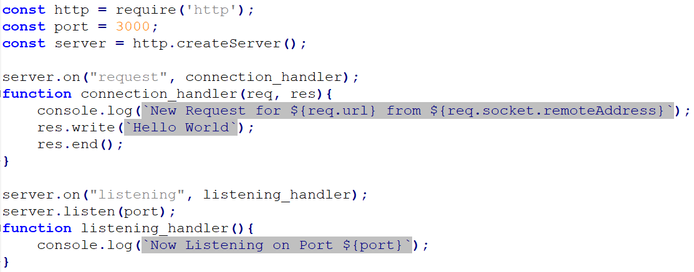
Start the server by running the command
node index.jsin the node command promptOpen a browser and in the address bar visit
localhost:3000to ensure your server is running. You should see two requests in the command prompt and the message Hello World in your browser. If you don't see the request for favicon.ico pressCTRL+F5to perform a hard refresh (ignore cache)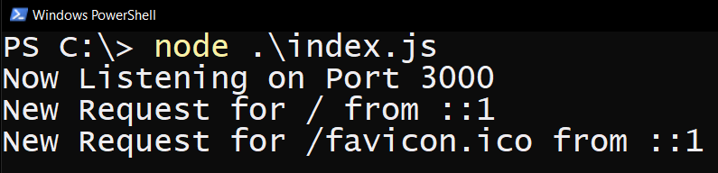
Change the code to print your name instead of Hello World.
(Kill the server by pressing
CTRL + Cfrom within the node command prompt.)Remember to restart the server after each change in your code
Routing
req.url represents the path the client requested. req.url removes the domain information from the url to focus on the path portion. While the server is running type into your browser.
localhost:3000/does-not-exist
You should get back the same result as the server is configured to res.write() to send the exact same message back for every request it receives. Using if/else statements we will parse six different types of requests:
- A request for the root directory of our site:
/ - A request for a favicon image that matches
/favicon.ico - A request for a banner image that matches
/images/banner.jpg - A request for an asset inside a directory
/album-art/for example
/album-art/5c3cf2ee3494e2da71dcf26303202ec491b26213.jpg
- A request for a page
/searchwhich can contain query strings like
/search?artist="Taylor Swift"
- A catch all request for anything else
Deliver content using pairs of res.write() followed by res.end() (removing the previous pair that printed your name)
For the first three you can use a simple comparison (eg. req.url === '/' )
For the next two use String.prototype.startsWith()
For the webpage requests deliver the text REPLACE WITH HOME, REPLACE WITH SEARCH, and REPLACE WITH CATCHALL for now.
For the favicon and images requests deliver the text REPLACE WITH FAVICON and REPLACE WITH IMAGE for now.
Use a browser to test each requests by copying each of the examples above and appending it to the end of localhost:3000, you should have different responses depending on the URL. The image paths will display errors because of the browser guessing incorrectly the MIME type based on the extension, but we will fix it soon.
/ (root)
Open
html/main.htmlin a text editor and add the following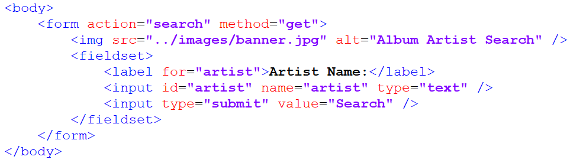
This creates an HTML form that accepts a single input
artistfrom the end user sends the data to the url/search
We want to serve this file to any clients who visit the root of our site.
For the route "/" replace the existing code with the following:
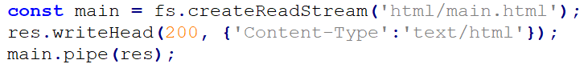
This opens a ReadStream to the html file.
We then pipe the file
main.htmlto the client as our response. Pipe by default will close the response once the stream is finished so there is no need forres.end()res.writeHead()is used to supply header information to the browser which tells it how to interpret the data being sent (as the filename is not transmitted when sending a stream of data)If left out, the browser will try it's best to figure out how to interpret the data, but its better to be explicit.
In this example we are supplying it two parameters
statusCodewhich represents a general category of how the request was handled.200 or
OKis the most common status code, signaling the request was successfully completed.The second parameter is the Response
headersobject which is used for a variety of purposes including specify the document type, length, encoding, compression, expiration (how long can it keep this resource cached), and other meta information regarding how the browser should interpret the data transmitted.https://developer.mozilla.org/en-US/docs/Glossary/Response_header
This object can have many components, but our example only has one, the Content Type. Content type elaborates on how a given file should be interpreted, the specific values that browsers understand is maintained by IANA called the MIME type.
https://en.wikipedia.org/wiki/Media_type
You don't need to memorize these values. Typically when I need to lookup the MIME type, a quick web search will get the results. For example a quick search for
MIME type .mp3will yieldaudio/mpeg.The browser downloading the file will see the MIME type and open the file with the appropriate tool (eg. audio player, video player, pdf reader, or web page)
res.writeHead()method must be called before any data is transmitted. (Call it before any calls topipe(),write(), orend())
/favicon.ico
When visited browsers will automatically request a favicon asset when you visit a site, if you send back a .ico file it will display it in the top corner of the browser tab representing the site icon.
There are a few clever hacks done with this like notifications (Gmail unread count), counters (Google Calendar dynamic date), and recently a full game
- Using
fs.createReadStream()create a file stream for the fileimages/favicon.ico - Content type is
'image/x-icon' - Pipe the contents to the response.
- Navigate to
localhost:3000/favicon.ico, you should see the image - Navigate to
localhost:3000/index.html, you should see the image in the top corner of your tab. The browser automatically makes secondary requests. Typically this is based on what resources are embedded on the HTML received, but favicons are a special case that most browsers try to get even if it wasn't explicitly specified in the HTML. (The browser will automatically checkdomain.com/favicon.ico)
/images/banner.jpg
After the browser downloads the file html/main.html it will automatically begin parsing the document, when it encounters an embed resource <img src="/images/banner.jpg" alt="Album Artist Search" /> The browser will make a secondary request to the server for this resource. This is why sometimes you may sometimes see partially loaded websites, the browser is still downloading certain embedded resources.
It will do this for all embedded resources like stylesheets, scripts, images, audio, and video. Hyperlinks however are not downloaded and only get requested when the user clicks on them. (A web page could have hundreds of links to large files, it only makes sense to download those resources if the user clicks on the link)
Right now the request is being made we can see that by navigating to localhost:3000/ in a browser, toggling the web inspector tools CTRL + SHIFT + I, and performing a hard refresh CTRL + F5
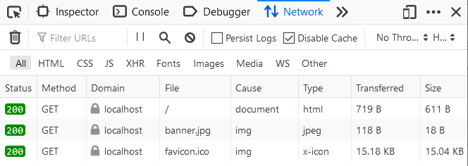
You should see requests for banner.jpg, this request is successful, but it is not actually delivering the image.
- Using
fs.createReadStream()create a file stream for the fileimages/banner.jpg - Using Content type is
'image/jpeg' - Pipe the contents to the response.
- Restart the server and navigate to
localhost:3000/you should see the banner image.
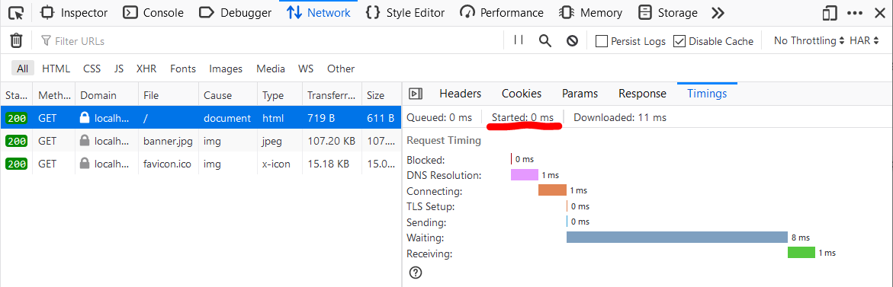
We can look a bit more in-depth at how each of the resources arrive in your browser by clicking through each request and going to the Timings tab. Started time gives us a relative time value for when a particular request was sent out from your browser. Notice favicon.ico starts downloading substantially later than banner.jpg. Most browsers deprioritize favicon requests and will request them after everything else on the page has been downloaded and executed. This is typically referred to as lazy loading. This is actually a rabbit hole that you can go very deep into exploring how to optimize page load times, but it's not for us.
/album-art/
images that we are going to work with are going to have the format
/album-art/5c3cf2ee3494e2da71dcf26303202ec491b26213.jpg
To service a request for the above file our application will check the /album-art/ directory for a file with that filename and if available, pipe the result back to the user.
- In the previous examples we can be confident that the images will exist, but this is not the case for this example. The standard way to respond to request for files that don't exist is to send a 404 status code.

The ready event is emitted when the image has been loaded into memory.
I've already created two test image inside album-art. Restart the server and in a browser navigate to localhost:3000/album-art/test1.jpg and localhost:3000/album-art/test2.jpg and ensure that you see the images.
Then navigate to localhost:3000/album-art/does-not-exist.jpg and ensure you are getting a 404 Not Found message.
We can replace the res.write("404 Not Found", ()=> res.end())
with a res.end("404 Not Found") which is equivalent to the above.
/search (part 1): delivering the form
When the end-user fills out the form from /, the data will be appended to the URL as a query string.
https://nodejs.org/api/url.html#url_url_strings_and_url_objects
The chart on this page shows the structure of the URL. The url library will be helpful here. It allows you to input a URL and using the parse() method break it up into useful components.
Create a new URL object by feeding in
req.urlCheck
url_object.searchParamsto learn the structure of the objectExample
Print the string
artistto consolehttps://nodejs.org/api/url.html#url_urlsearchparams_get_name
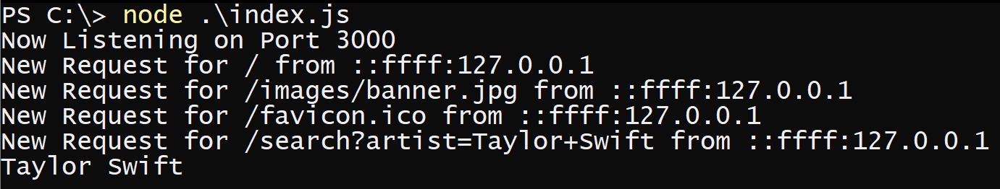
else
Send a 404 Not Found response, and close the connection.
Using a REST API
A REST API is an interface from which our application can communicate with third party servers to fetch data or request services. For example the Google Translate API can convert between various languages which can be useful in certain applications. To interact with it programmatically we use APIs.
Spotify is a streaming music platform that offer's music subscriptions, they also have a very beginner friendly API.
This assignment will have students utilize Spotify's API to lookup album art related to a search term and display results.
Setup a Spotify Account
You need a Spotify account to use the API, if you don't have one or have concerns about privacy you can create a new one (free accounts work fine)
Navigate to the developer dashboard
Click Create an App
Name:
CS355 Album Art Search AppDescription:
Learning Spotify API 1 - Client Credentials GrantWhat are you building?
Choose
I don't know,Next, Check all the boxes, andSubmitClick on the project to find your credentials.
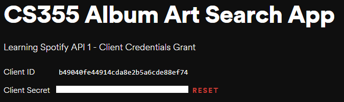
Client ID is the identifier for your application
Client Secret is your application's password
Authentication
We will store credentials in a json file inside
/auth/. Be careful to not share this file as it allows anyone who has it to impersonate your application. Spotify's API is free, but for billed API's like AWS, accidentally publishing your client secret can be an extremely expensive mistake.Accidentally pushing API keys to GitHub can be an Expensive/Stressful Lesson:
A group of bitcoin miners evidently ran a script to find client secrets for servers on GitHub and took control of the AWS account. After just one week of the account being compromised, the monthly bill was $285,000!
In the future, I hope to add a section related to protecting your keys using environmental variables, but for now I'll post some resources at the end of this assignment if you want to look further into it. For now ensure that your keys are centralized into a single location
/auth/credentials.jsonand that file never gets shared, use gitignore files if using Git/Github.Open
/auth/credentials.json. The JSON file should represent an object withclient_idandclient_secretattributes set to be the values Spotify has given us. Add these values.Use https://jsonlint.com/ to validate your JSON. (Pitfalls: JSON requires double quotes for all strings)
This is done to avoid hard coding credentials into
index.jsWe can import the
credentials.jsonfile by using a require statement.Add the following to your
index.jsfileconst credentials = require('./auth/credentials.json');This will automatically parse the JSON string into a JavaScript object.
To get Spotify to accept our queries the application needs to identify itself by sending it's client_id and secret. There are three different types of authorization flows, (Authorization Code, Implicit Grant, and Client Credentials) each which serve a different purpose.
For this assignment we will be using the "Client Credentials Flow"
Keep this link open, as I will refer to it as the Spotify Authorization doc.
Client Credential allows us to access resources that are independent of any particular user. In our example album art does not change from user to user. In contrast, if we were to try to access a particular Spotify user's personal playlists, we would need to explicitly ask for permission from that user (using either Authorization Code or Implicit Grant).
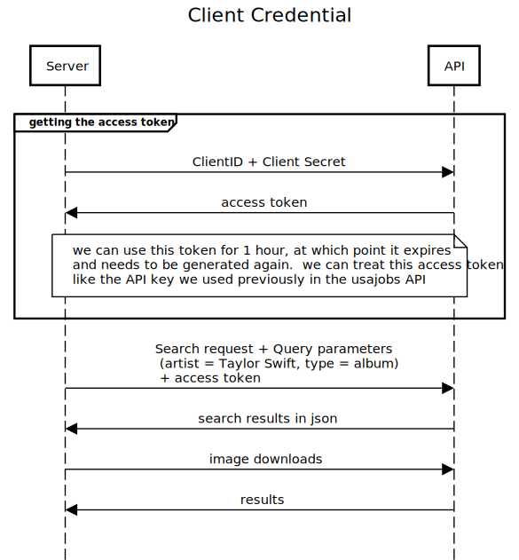
Conceptually Client Credential and API Key authentication are roughly the same. The main benefit between of Client Credential over API key authentication is that we can transition from Client Credential to 3-Legged OAuth fairly easily, where as API key requires an entire rewrite. Technically there is an additional initial handshake where our server sends Client ID and Secret to the API in exchange for an access token. This access token is then attached to subsequent requests. Typically these access tokens also expire and a new one needs to be requested again after a window (1 hour in the case of Spotify)
Testing the Request
Debugging HTTPS errors from within Node.js is not a good idea. Instead there are dedicated tools like Insomnia and Postman. I'll be stepping through a quick tutorial on how to use Insomnia.
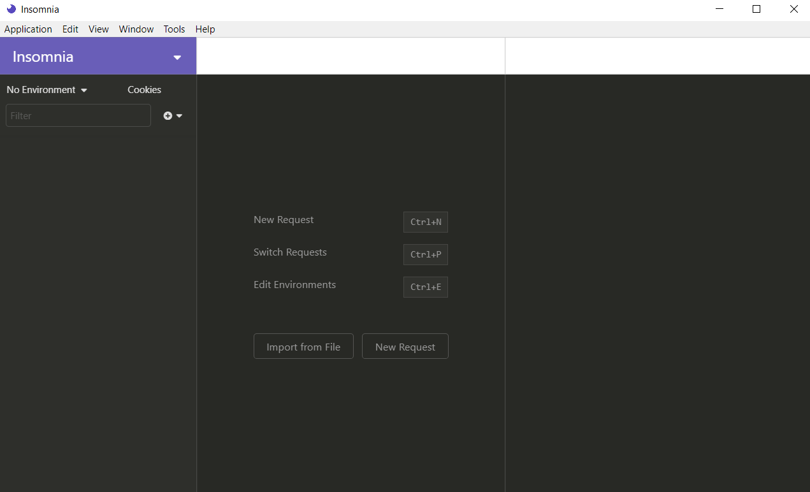
From the main window create a New Request, call it Spotify and change the request type to POST
The request is sent to the
/api/tokenendpoint of the Accounts service:xxxxxxxxxxPOST https://accounts.spotify.com/api/tokenThe body of this POST request must contain the following parameters encoded in
application/x-www-form-urlencodedas defined in the OAuth 2.0 specification:
REQUEST BODY PARAMETER VALUE grant_type Required. Set it to client_credentials.-Spotify Authorization doc
First add Spotify's API endpoint into the URL bar on top.
The OAuth 2.0 specification dictates that the body type will be application/x-www-form-urlencoded, this means the body should be interpreted as Form URL Encoded. Click the arrow next to Body and click Form URL Encoded.
This will add a new value to Header Content-Type : application/x-www-form-urlencoded
Next in the Form Body we will add grant_type : client_credential
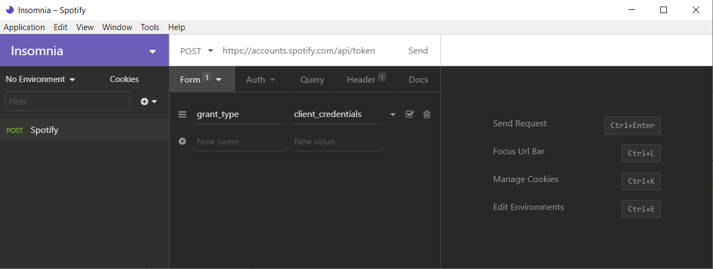
Next the Header
The header of this POST request must contain the following parameter:
HEADER PARAMETER VALUE Authorization Required. Base 64 encoded string that contains the client ID and client secret key. The field must have the format: Authorization: Basic <base64 encoded client_id:client_secret>-Spotify Authorization doc
This one is harder because while we do have the client_id and client_secret we need to combine them into a single base64 encoded value. I've already written a script to do this.
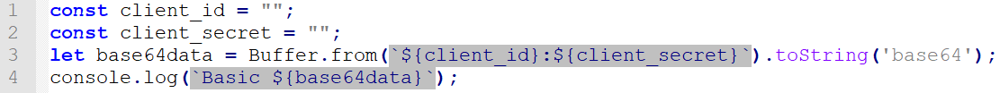
Type it up into a new script file, add your client id and secret, and run it to get the value required for Authorization.

Click send and you should get an access_token which can be used to query other endpoints for data. This token is valid for 1 hour, and after that a new token must be requested. In the response go to Timeline and scroll down to see the full request. Notice the purple line
grant_type=client_credentials
This is the Body information represented as application/x-www-form-urlencoded data
The next steps will have students to go through this exact process from within Node.js.
We need two objects
post_datarepresenting our Form Body Data containinggrant_typeand a Headers object containingContent-TypeandAuthorizationCreate two objects
post_dataandheaderswith these properties.In the
headersobject add an additional property"Content-Length"and set it to be the calculated valuepost_data.length. (That's why I requestedpost_databe created first) This value was automatically added by insomnia and I believe Node.js will also automatically add in when it knows the length, but it's better to be explicit.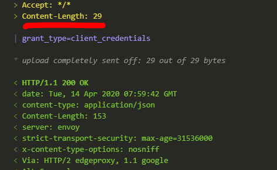
Use the previous code to generate the base64 encoded string. Instead of printing it out, use the variable
base64dataas part of the next request made.The authentication server only accepts HTTPS POST requests to the API endpoint
https://accounts.spotify.com/api/tokenInclude the
httpslibrary if you haven't done so already. (We need bothhttpandhttpslibraries)httpfor our server (so we don't have to deal with certificates)httpsso we can make requests as clients to API's. (If you look at the previous URL it is using thehttpsprotocol,httpscannot communicate withhttp)
post_dataneeds to be in querystring format. Currently it is in JS object format (eg.foo=bar&baz=qux)There is a built in library
querystringwith a methodstringifythat can convert an object into a querystring.https://nodejs.org/api/querystring.html#querystring_querystring_stringify_obj_sep_eq_options
Convert
post_datato a querystring using this methodTo create a POST request use the
https.request()method we need to utilize all three argumentshttps://nodejs.org/api/https.html#https_https_request_url_options_callback
Look through the options here
https://nodejs.org/api/http.html#http_http_request_options_callback
Create an object
optionswith two propertiesmethodset toPOSTheadersset to be the headers object we created earlier.
This is describing our request as well as embedding header information.
Create the request using
http.requestsupplying it relevant data.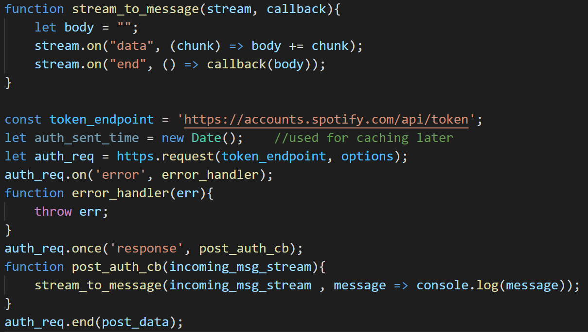
The
stream_to_messagefunction is a utility function created to wait for a stream of data to be completely collected before executing the callback (next phase of execution). This will be used multiple times in this program (each time we have a stream of text data we need to process) so I moved it to the top.stream_to_messageoperates as follows, it listens on astream(in our example these will be sockets) and each time adataevent occurs it casts the chunk to text (don't use this for binary data) and then appends tobody. Finally when there is no more data anendevent is caught which executescallback(next function in execution) passing inbody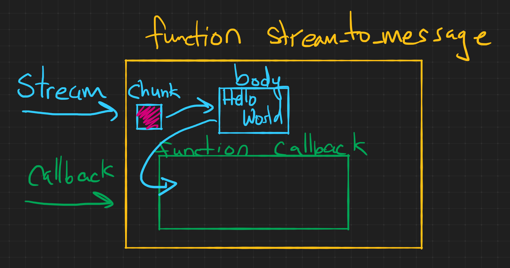
Add in the code for
auth_sent_timewe will use it for caching laterhttps.request()creates a newClientRequestobjecthttps://nodejs.org/api/http.html#http_class_http_clientrequest
ClientRequestrepresents Node.js's internal representation of a (currently unsent) request to the Spotify URL. This object extends stream and add 8 new events. We listen to two eventserror(part of stream) andresponse.https://nodejs.org/api/http.html#http_event_response
Emitted when a response is received to this request. This event is emitted only once.
Because it is only emitted once, I listen to it using
once()instead ofon()to be explicit about it's behavior, in case I need to come back to the code later.When we are ready to send the request we can either use
auth_req.end()orauth_req.write()if we want to keep the connection open (we don't in this case)We pass in any data that should be part of the body of the request as the parameter to
socket.end(data)orsocket.write(data). For mostPOSTrequests this is a querystring.If successful you should see something like this without the formatting.
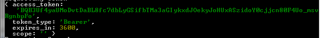
Replace
console.login the previous code toreceived_authenticationmaking sure to includemessage, in addition also pass in variablesuser_input,authe_sent_time, andresWrite the function
received_authenticationto proceed to the next phase of our application.The message returned is a JSON encoded string, use
JSON.parse()to convert it back to a JS object and print it to console to examine the structure.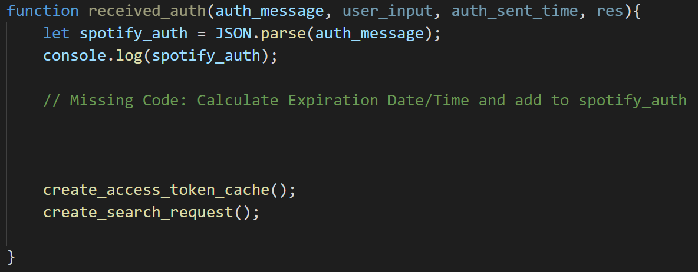
Ignore the two functions
create_access_token_cacheandcreate_search_reqfor now. You can write two empty function and fill them in in the next step.Upon successfully sending the data, the response will include an
access_token. With thisaccess_tokenthe Spotify API can be used for the next 3600 seconds. Each time we query the API we should include theaccess_tokenin the request.Note this is how Spotify does authentication, not how all REST API's perform authentication. OAuth 2.0 is not a protocol, but a framework, implementation specifications are left to the API developer. This means you as an application level developer need to learn the authentication specifications for each new REST API you want to include in your application. Use an HTTP debugger to test all calls before translating each request to code.
Token Expiration and Caching
This token expires in 3600 seconds after which a new token needs to be requested. Our current code gets a new token every time though. To reduce the overhead of requesting a new token every time, we will cache this token.
Caching is a term for saving previous requests and reusing the data as long as it is still relevant. It is important when working with third party API's as most will have a rate limit to control how many requests can be made, and many paid API's will charge it's users per request. If you can cut down your requests without impacting performance this can save you real world dollars.
The token generated is valid for 3600 seconds so we can save it for future requests instead of creating a new token every time. There's a problem however, saving 3600 to a file won't work as once it's saved it won't decrease for every second that passes. Instead calculate and save the time this token expires, and if the current time is after the saved value, fetch a new token.
The missing block above creates a new property spotify_auth.expiration and sets it to be one hour from auth_sent_time which was created earlier for this sole purpose.
I used the following methods to generate the expiration property:
https://developer.mozilla.org/en-US/docs/Web/JavaScript/Reference/Global_Objects/Date
https://developer.mozilla.org/en-US/docs/Web/JavaScript/Reference/Global_Objects/Date/getTime (This function returns back milliseconds, make sure to convert from seconds)
https://developer.mozilla.org/en-US/docs/Web/JavaScript/Reference/Global_Objects/Date/toJSON
Generate the
spotify_auth.expirationproperty and set it to be one hour fromauth_sent_timeWrite a function
create_access_token_cache(spotify_auth)that writesspotify_authto a file'./auth/authentication-res.json'(Make sure to convert it to a JSON string, you cannot write objects to files) Hint:JSON.stringify()will convert objects to JSON encoded stringsfs.writeFileis ideal for writing a cache.https://nodejs.org/api/fs.html#fs_fs_writefile_file_data_options_callback
The task of caching results can be accomplish asynchronously, because it only benefits future requests, the current request does not need the cache in any manner. This is In contrast to the synchronous methods like
writeFileSync()where we can not proceed until the write operation is completed.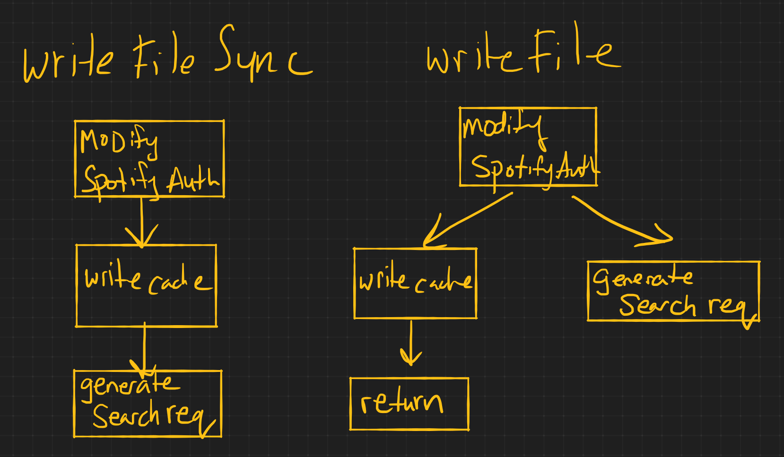
You can use my code for checking to see if a cached file exists, but be prepared to write your own for the image cache.
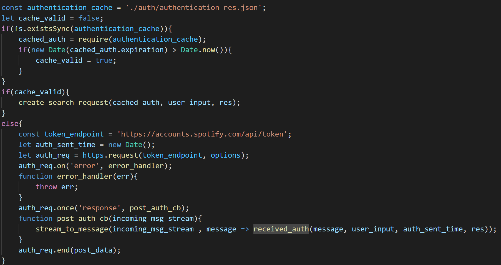
In my example authentication_cache points to the location of the saved cache.
xxxxxxxxxxconst authentication_cache = './auth/authentication-res.json';fs.existsSync(path)
https://nodejs.org/api/fs.html#fs_fs_existssync_path
Notice we use fs.existSync over here. There is an async version fs.access() but there is little reason to use it, because our program cannot do anything else in the meantime. It has to decide which path to go down create_search_request or received_auth and it's decision is based on the contents of this file.
Cache Independence
Make sure your code is not dependent on it's cache. To test this, delete the authentication-res.json file and run your code. It should request a new access_token and recreate the file authentication-res.json.
Callback Hell
Try to avoid nesting too many callbacks inside each other by modularizing your code.
/search (part 2): create_search_request()
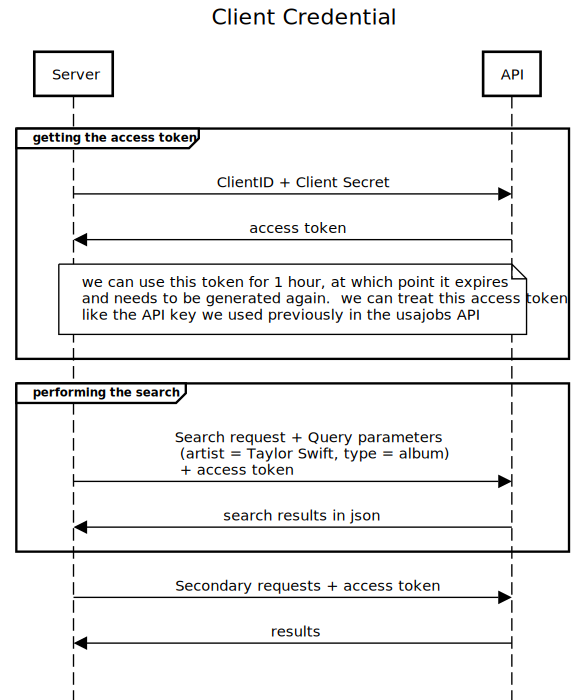
The next step creates another request to Spotify's API
This time requesting album art related to the users search query
Here's the relevant Spotify documentation
https://developer.spotify.com/documentation/web-api/reference/search/search/
Endpoint
The endpoint is a communication channel that will process requests. This tells us the protocol and the url that we send our requests to.
In this example this is using the GET method to the URL https://api.spotify.com/v1/search
Because this is a GET request and request parameters need to be attached to the URL instead of sent via the body with res.end() for POST request. Because no data is being sent and GET is the default method we can remove options entirely and use the two argument version of https.request(url,callback)
https://nodejs.org/api/https.html#https_https_request_url_options_callback
Request Parameters
Describes how to structure a requests. In this example we need to supply access_token, q, and type.
q: would be the artist name the user typed intype: hard code this toalbumsince we are trying to get album art.access_token: Get from theauthentication-res.jsonfile
Use Insomnia to simulate a request for a search. This request is a GET request which means embedded data goes into the query field (part of the URL)
You should receive back a larger JSON object this time representing the list of albums that fit the search term.
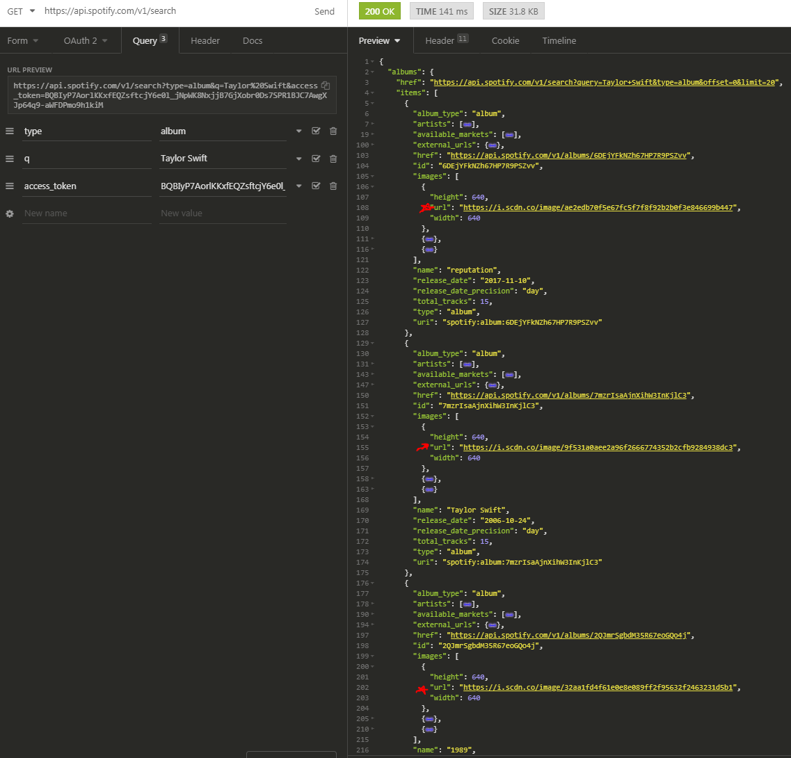
Here's a cleanup version of the Spotify's album object structure. We are interested in getting the album art images. We get back a much larger object though so we need to navigate it's properties after parsing it.
The values that we need are the URLs of the album art. The structure we wind up traversing through is:
albums.items[n].images[0].url, where n goes from 0 to albums.length.
Using the previous request as an example, write code to download this json file and print it to console.
Downloading the Images
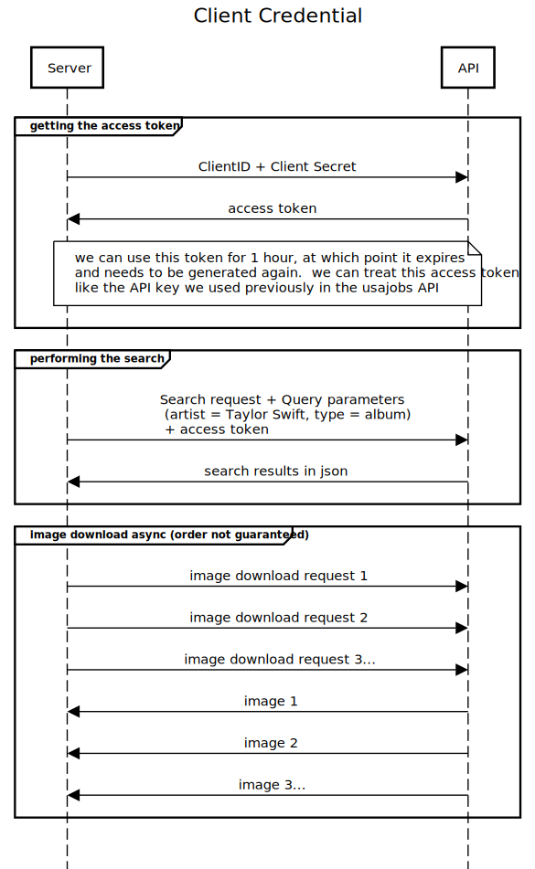
We need to download multiple images asynchronously. (Refer to assignment-01 file system example for how to process multiple files asynchronously)
Create a counter to keep track of how many images have finished downloading and once that number matches total albums, move to the final phase of serving a webpage.
For each image create a request to download the image at the url specified.
When receiving images don't use stream_to_message(),
body += chunk has an implicit string conversion which doesn't work with binary data. Instead create a file (using the original filename which is guaranteed to be unique, don't rename it) and pipe() the download to the file. There's a specific finish event emitted when a Write Stream has emptied.

This syntax is slightly different, instead of using a response event listener like in the previous examples, you can put the response handler as the second parameter in https.get() or https.request() This is slightly more compact, but increases the indentation complexity, combined with an inline function it can get messy fast. Either choice is fine, I prefer using the observer pattern, but put this here to show a commonly used alternative.
I used https.get() in this example because it is a GET request,
but you can use https.request() if you prefer
https://nodejs.org/api/https.html#https_https_get_options_callback
For writing the image {'encoding':null} prevents the system from encoding the data in utf8 . The event finish is unique to Write Streams. Read Streams use the event end.
https://stackoverflow.com/a/34310963/992856
Serving a Webpage
After a write stream completes the finish event fires, increasing downloaded_images by one. When it reaches albums.length call a function generate_webpage()
The webpage for the results should display a heading (h1) with the text Search Results followed by the search query sent by the user. It will then display an image (img) for each album art returned.
Refer to the / (root) section on top of this document to see the basic HTML syntax. You are essentially trying to generate a piece of text that looks like that, but with links to the 20 images you downloaded (don't point to the Spotify URLs, point to your cached versions, refer to /album-art/ section on top to see the URL format, instead of using localhost use ./ to represent the current directory )
One way to do this is to collect all the local image paths after the download_album_art phase into an array of strings, apply a map function to wrap the results in img tags and then applied the Array.prototype.join() method to combine them.
https://developer.mozilla.org/en-US/docs/Web/JavaScript/Reference/Global_Objects/Array/join
Use res.end() to send the generated webpage to the client.
When the webpage loads it will make subsequent requests for the image in the image tag which we took care of earlier. If the /album-art/ path is setup correctly it should serve images which are then embedded into the webpage.
Caching Images
Before downloading an image check your /album_art/ directory to see if you have an image with the same filename and if so serve that instead of making a request to the server.
Use fs.access() to test for file existence. Use this over fs.existsSync so we can check multiple files at the same time.
https://nodejs.org/api/fs.html#fs_fs_access_path_mode_callback
Analyzing the Traffic
Using https://sequencediagram.org/ create three sequence diagrams analyzing the Layer 5 traffic (Application Layer) for the following scenarios:
Do not include TCP level information like handshakes, SYNs or ACKs.
- The first request to your server for artist A.
- A second request (from the same user within one hour) to your server for artist B
- A third request (from the same user within the same one hour) to your server for artist B again.
There should be three entities, Client, Server, and Spotify API
Template for first request:
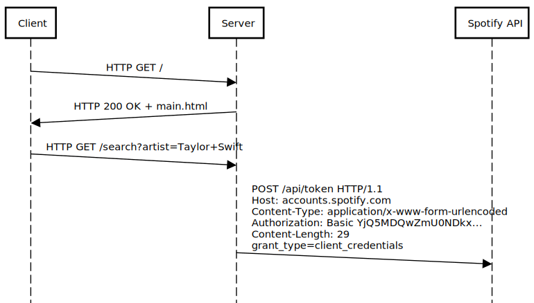
For large bodies of text use filename (eg. index.html) if available or describe data if unavailable
Performance Improvements
We've cached the access_token and the album art images as part of this assignment.
There is something else we can cache, although this last cache has drawbacks. Imagine that our goal was to minimize API calls at any cost however.
Discover what can be cached by looking at the sequence diagram and see the only remaining un-cached request to the API server, is it possible to cache this request such that if multiple users searches the exact same artist we don't need to query the API as often?
Implement this cache and show using an additional sequence diagram how it improves upon the current design.
What is the drawback to this cache? What happens if an artist releases a new album? How can we minimize the impact of the drawback?
Testing
Delete all cached album art and authentication-res.json
Search for the following terms:
- Taylor Swift
- P!nk
- Hear'Say
- AC/DC
Create a console.log() message inside the callback for each https.request() / https.get() make sure those messages are NOT being printed if you are using a cached resource (whether it be access_token, image, or something else).
Further Reading
Environmental Variables